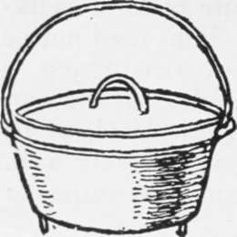

Camp Grates And Fire Irons
Description
This section is from the book "Camping And Woodcraft", by Horace Kephart. Also available from Amazon: Camping and Woodcraft.
Camp Grates And Fire Irons
A stove is merely a convenience and an economizer of fuel. Quite as good meals can be cooked over an open fire. Even when it rains, a bonfire can be built to one side and hard coals shoveled from it to a spot sheltered by canvas where the cooking is done. But it pays to take along either a folding grate or a pair of fire irons to hold the frying-pan, etc., level and close over the coals. Then you will need no long stick attached to the frying-Dan handle, nor must the cook give all his attention to that one utensil when frying or making pancakes.
Of folding grates there are many and ingenious patterns. I never use any of them; for they are likely to warp from heat or to rust in service, and become unmanageable. Simpler, cheaper, and quite as useful, are a pair of " fire-irons," which are simply two pieces of flat steel 24 x 1 T/z x y% inches, weighing 2x/2 pounds to the pair, that any blacksmith will cut for you in a minute. Lay them across a couple of logs or flat rocks that are placed on either side of the fire. You can space them apart to suit vessels of different sizes. They will stand any amount of abuse; if they get bent, you can quickly hammer them back into shape.
Ovens
When there is no stove in the outfit, you will need some kind of camp oven. For a fixed camp a good kind is the old-fashioned Dutch oven (Fig. 37). How to use it is explained in Chapter XX. For a party of four to six it should be of full 13-inch diameter, which will weigh about 17 pounds. Lighter ones, but much more expensive, are made of aluminum with iron tops. Aluminum will not stand the high heat necessary for the top, but does very well for the body of the vessel, if thick enough.
Such ovens are favorites in the South and the Far West. They are better than reflectors (see Chapter VII) for any baking or roasting that requires considerable time (inimitable for pot-roasts and baked beans), but rather unhandy for biscuits, though all right for biscuit-loaf.
Other Utensils
For stationary camps, or for traveling by wagon, the most satisfactory material for pots and table service is enameled ware. It is easier to clean than any other metal, and it is not corroded, like tin, by fruits or vegetables steeped, cooked or left over in it. The tendency of enameled ware to chip and flake in cold weather can be tamed by warming gradually before exposing to fierce heat.
Fig. 37. Dutch Oven.
Pressed tinware of heavy gauge is good enough for most purposes, though hard to clean when greasy. It is unfit to cook tart fruit in, and it makes tea " taste." Thin soldered tinware is treacherous, dents and rusts easily, and lasts but a short time.
Aluminum is needlessly expensive for the class of Camping we are now considering.
Where compactness need not be studied, frying-pans with stationary handles are more practical than the folding kind.
A complete cooking, washing, and table set, for six persons, is listed below. It is heavy (about 58 pounds, with oven and fire irons, or 38 pounds without them), but cheap (about $13.50 with, or $10.50 without oven and irons) and should last a long time.
Utensils For 6 Persons In Fixed Camp
Dutch Oven, cast iron, 13 1/4x6 in. (omitted if there 19 a stove).
2 Fire Irons, flat steel, 24 x 1 1/2 x 1/8 in. (omitted if there is a stove).
Dish Pan, enameled, 16x5 in. Wash Basin, enameled, 13 3/4 in.
2 Milk Pans, enameled, 10 1/2 in. (for mixing and serv ing).
Water Pail, enameled, 10 qt.
3 Covered Pails, enameled, 3, 4 1/2 and 6 qt., nesting. Double Boiler, enameled, 3 1/2 qt.
Coffee Pot, enameled, 3 1/4 Qt. Tea Pot, enameled, 2 qt. Graduated Measure, enameled, 1 2 Frying-pans, steel, 10 1/8 in.
2 Pot Covers, tin, 10 1/2 in. Broiler, wire, 9x14 in.
3 Pot Chains-Tea Ball, aluminum. Dipper, enameled, 1 qt. Basting Spoon, enameled. Skimmer, enameled Soup Ladle, enameled.
Cake Turner, steel. Butcher Knife, steel. Flesh Fork, steel. Kitchen Saw, steel. Spring Balance, 24 lb. Pot Cleaner, wire. Can Opener and Corkscrew. Salt Shaker. Pepper Shaker.
To Dinner Plates, white enameled, 8 1/2 in.
6 Cups, white enameled, 1 pint (handles cut to nest).
6 Cereal Bowls, white enameled.
6 Knives, steel.
6 Forks, white metal.
6 Teaspoons, white metal.
6 Dessert Spoons, white metal.
2 yds. Table Oilcloth.
2 yds. Turkish Toweling (dish towels and clouts).
100 Paper Napkins.
1 bar Sapolio.
1 bar Fels Naphtha Soap.
A milk-can should be added if the camp is near a farm-house.
Continue to:
- prev: Camp Stoves
- Table of Contents
- next: Fireless Cookers